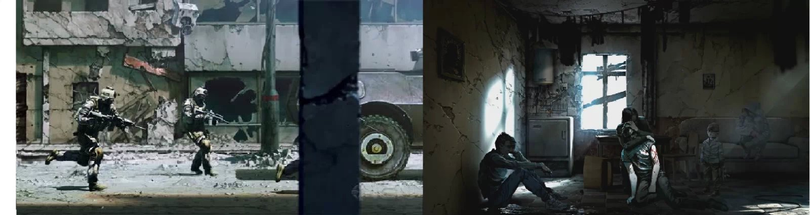

This War Of Mine
这是一款生存游戏，很真实的反应出一群平民在被战火包围的城市里的处境，城市里物资短缺，很多时候生活必备物资都要从废墟中挖掘，或者从别人那里偷窃或抢劫而来，作为幸存者的一员，你每天想的事情就是去做一些事情，尽力的搜集物资，使自己活下来，
更重要的是，你要让自己保持在最佳状态，最好避免生病、挨饿和一无所获，如果你生病，那么你就需要更多的休息和稀缺的药物；如果你挨饿，你将无法出去搜寻东西；这都将减少你的搜索成果，这样，你更容易被饥饿和疾病打倒.
联想到和平的人类社会也是如此，只不过没有那么残酷，但是如果在陌生的城市，你每天都不去工作的话，那么你就得不到金钱，更不用提去购买生活必需品了，你得病也会影响你工作，继而影响你的工资，继而影响你的生活。
对于我们来说，生存/生活同样是一场战争，“this war of mine”，这是我们的战争。
